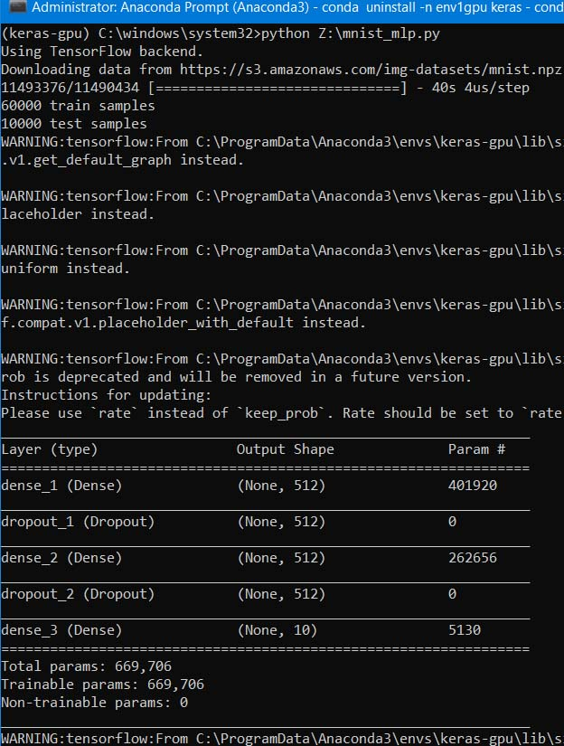
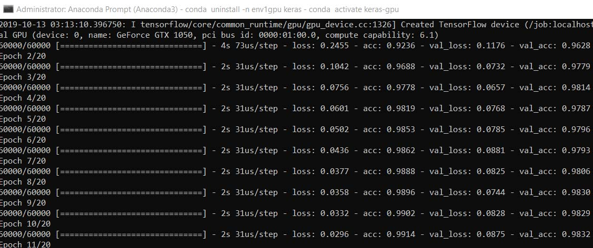
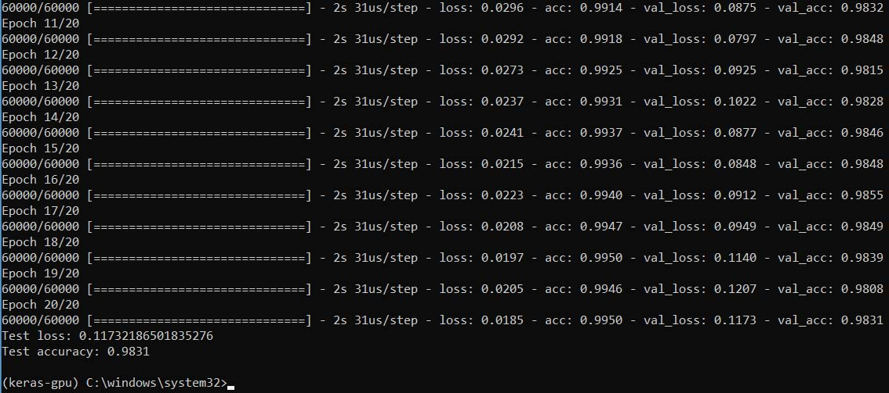

GPU पायथन प्रोग्रामिंग — इन्सटॉलेशन
GPU प्रोग्रामिंग द्वारा कम्प्यूटर की कम्प्यूटिंग स्पीड बहुत बढ़ायी जा सकती है ।
NVIDEA के सबसे सस्ते २ जीबी वाले जीपीयू के कोरों की संख्या ३८४ है । उसके बाद है GPU Geforce 1050 जिसमें ६४० कोर हैं । मँहगे जीपीयू और टीपीयू में हजारों कोर होते हैं और डेस्कटॉप में अनेक वैसे जीपीयू जोड़कर मल्टी−जीपीयू प्रोग्रामिंग भी की जाती है जिसके द्वारा कम्प्यूटर की गति लाखों गुणा आप बढ़ा सकते हैं — बिना किसी सुपरकम्प्यूटर के，अपने घर बैठे । किन्तु उसमें लाखों रूपये खर्च होंगे । मेरे लैपटॉप के CPU की औसत क्षमता लगभग ५५ गेगा−फ्लॉप प्रति सेकण्ड है，किन्तु इसी लैपटॉप के GPU की क्षमता ५२०० गेगा−फ्लॉप प्रति सेकण्ड है — यदि औसतन ६ फ्लोटिंग प्वॉइण्ट ऑपरेशन प्रति सेकण्ड हों । अतः CPU−प्रोग्रामिंग की तुलना में यदि GPU प्रोग्रामिंग करेंगे तो कम्प्यूटर की गति अत्यधिक बढ़ायी जा सकती है । परन्तु अधिकांश लोग डेडिकेटेड GPU खरीदते भी हैं तो उसका उपयोग केवल वीडियो गेम खेलने में करते हैं，प्रोग्रामिंग में उसका प्रयोग केवल वैज्ञानिकों द्वारा किया जाता है ।
~~~~~~~~~~~~~~~~~~~~~~~~~~~~~~~~~~~~~~~~~~~~~~~~~~~~~~~~~~~~~~~~~
NVIDEA के GPU टूलकिट और न्यूरल लायब्रेरी का इन्सटॉलेशन
Machine Learning Starter लेख में CPU−प्रोग्रामिंग मोड में पायथन न्यूरल नेटवर्क ट्रेनिंग हेतु समूचे एनवायरनमेण्ट का इन्सटॉलेशन और प्रोग्रामिंग का उदाहरण दिया गया था ।
अनाकोण्डा में उस “बेस” एनवायरनमेण्ट के इन्सटॉलेशन के बाद जीपीयू−एनवायरनमेण्ट का इन्सटॉलेशन अब इस लेख में दिखाया जा रहा है । आपके कम्प्यूटर में NVIDEA का GPU है तभी यह लेख काम देगा । नीचे जो उदाहरण है वह NVIDEA के GPU Geforce 1050 पर टेस्ट किया गया है जो मेरे लैपटॉप में है，इसकी ग्राफिक मेमोरी 4GB है । लैपटॉप में न्यूनतम ८ जीबी सामान्य रैम और NVIDEA का कोई भी जीपीयू हो तभी यह लेख आपके काम का होगा । सामान्य रैम यदि ८ जीबी है और जीपीयू नहीं है तो पिछले लेख के छोटे प्रोग्राम जैसे प्रोग्राम ही रन करने चाहिये ।
इन्सटॉलेशन की विधि
अनाकोण्डा के “बेस” एनवायरनमेण्ट में “केरस” के अलावा अन्य कोई पैकेज इन्सटॉल करने में हड़बड़ी मत करें，वैसा करना ही हो तो नया एनवायरनमेण्ट बनाकर उसमें जोड़तोड़ करें । “बेस” एनवायरनमेण्ट में भूलकर भी जीपीयू लाइब्रेरियों और पैकेजों को इन्सटॉल मत करें，वरना सामान्य CPU−प्रोग्रामिंग मोड गड़बड़ा जायगा ।
~~~~~~~~~~~~~~~~~~~~~~~~~~~~~~~~~~~~~~~~~~~~~~~~~~~~~~~~~~~~~~~~~
कुडा−टूलकिट
( CUDA = Compute Unified Device Architecture = डेडिकेटेड जीपीयू के सैकड़ों या हजारों कोरों को एकसाथ कम्प्यूटिंग हेतु प्रयुक्त करने का पैरेलल प्रोसेसिंग सॉफ्टवेयर)
अब इस वेबसाइट से NVIDEA का विशाल (CUDA) कुडा−टूलकिट इन्सटॉल कर लें，आपका विण्डो किस वर्सन का है इसे ध्यान में रखकर कुडा−टूलकिट का वर्सन चुनें । अपने कम्प्यूटर के जीपीयू के ड्राइवर का नाम न पता हो तो इस वेबसाइट पर सबसे अच्छे ड्राइवर वाला टूलकिट चुनें (२⋅३८ जीबी का ऐक्से फाइल है，डाउनलोड करने में समय लेगा) । मेरे लैपटॉप में विण्डो−१० है，अतः मुझे cuda_10.1.243_426.00_win10.exe डाउनलोड करना पड़ा (RTX-3090 वाले डेस्कटॉप में cudnn-11.2-windows-x64-v8.1.1.33 डाउनलोड करना पड़ा) । डाउनलोड के पश्चात इस फाइल को रन करें，इन्सटॉल हो जायगा :—
https://developer.nvidia.com/cuda-downloads
अब कुडा न्यूरल नेटवर्क cuDNN की लाइब्रेरी इस वेबसाइट से डाउनलोड करें —
https://developer.nvidia.com/rdp/cudnn-download
डाउनलोड के पश्चात उस जिप फाइल को अन−कम्प्रेस करके उस पूरे फोल्डर को सिस्टम ड्राइव में रख लें，जैसे कि —
C:\cudnn-10.2-windows10-x64-v7.6.5.32
अथवा
C:\cudnn-11.2-windows-x64-v8.1.1.33
अब विण्डो के स्टार्ट के बगल में सर्च बॉक्स में Edit environment variables for your account ढूँढकर खोलें । खुलने पर उसमें ऊपर ‘यूजर वेरिएबल्स⋅⋅⋅’ मिलेगा，उसके अन्दर Path को चुनकर एडिट बटन दबायें और जो नया इण्टरफेस−विण्डो खुलेगा उसमें न्यू को क्लिक करकें “C:\cudnn-11.2-windows-x64-v8.1.1.33\cuda\bin” पेस्ट कर दें — अनाकोण्डा और विण्डो भी उसी C ड्राइव में होने चाहिये ।
आपके कम्प्यूटर में माइक्रोसॉफ्ट विजुअल स्टुडियो है तो उसमें भी उपरोक्त सारे टूल स्वतः इन्स्टॉल्ड हो जायेंगे । माइक्रोसॉफ्ट विजुअल स्टुडियो का कम्युनिटी एडिशन मुफ्त में है किन्तु विण्डो लायसेंस वर्सन वाला चाहिये ।
यदि भविष्य में कभी पायथन के किसी विशेष वर्सन वाले एनवायरनमेण्ट की आवश्यकता पड़े ，उदाहरणार्थ python 3.8.6，तो उसे बनाने के लिये बेस एनवायरनमेण्ट में निम्न कमाण्ड रन करें —
conda create -n py388 python=3.8.8
(check latest anaconda's compatible version at = https://repo.anaconda.com/pkgs/main/win-64/ )
Then,
conda activate py388
~~~~~~~~~~~~~~~~~~~~~~~~~~~~~~~~~~~~~~~~~~~~~~~~~~~~~~~~~~~~~~~~~
keras-gpu तथा pytorch
अब अनाकोण्डा के एडमिनिस्ट्रेटिव प्रॉम्प्ट पर निम्न कमाण्ड टाइप करके नया एनवॉयरनमेण्ट केरस-जीपीयू बना लें (keras-gpu के बदले नये एनवॉयरनमेण्ट का कुछ भी नाम रख सकते हैं) —
(python=3.6 के बदले python अन्य वर्सन पहले से हो तो उसी वर्सन का नाम टाइप करें अथवा पायथन वर्सन को पहले अपडेट कर लें ।)
conda create -n env_gpu python=3.7.0 anaconda
फिर उस नये एनवॉयरनमेण्ट को एक्टिवेट कर लें，तब आप “बेस” से निकल जायेंगे —
conda activate env_gpu
अब जीपीयू−मोड वाला केरस और PYTORCH इन्सटॉल कर लें —
conda install -n env_gpu keras-gpu
(इसमें “env_gpu” एनवॉयरनमेण्ट का नाम है और “keras-gpu” केरस का जीपीयू−मोड वाला प्रोग्रामिंग पैकेज है ।)
pip install tensorflow-gpu==2.3.0
( यदि पहले से tensorflow-gpu का कोई पुराना वर्सन इन्सटॉल्ड है तो निम्न कमाण्ड कार्य करेगा —
pip install —upgrade tensorflow-gpu==2.3.0 in both keras=gpu and opencv. )
बिना gpu वाला tensorflow हो या gpu सहित tensorflow-gpu，टेन्सरफ्लो के 2.3.0 से पहले का वर्सन न रखें क्योंकि वर्सन 2.3.0 और उसके बाद वाले वर्सनों में ही ऑटो मशीन लर्निंग का केरस पैकेज कार्य करेगा जो नौसीखियों से लेकर विशेषज्ञों तक को सर्वोत्तम मॉडल ढूँढने में सहायता करता है ।
( यदि pytorch में कार्य करना हो तो उसे इन्सटॉल करने का कोड है —
conda create —name mytorch —clone env_gpu
conda install pytorch torchvision cudatoolkit=10.1 -c pytorch
456.2 MB के cudatoolkit-10.1.243 सहित 746.5 MB का pytorch-1.7.0 इन्सटॉल हो जायगा । )
NOTE: 'conda-forge' channel is required for cudatoolkit 11.1
conda install pytorch torchvision torchaudio cudatoolkit=11.1 -c pytorch -c conda-forge
1.20 GB के cudatoolkit-11.1.1 सहित 1.53 GB का pytorch-1.8.1 इन्सटॉल हो जायगा । )
किसी env1 नाम वाले एनवॉयरनमेण्ट को सदा के लिये हटाने
का यह कोड है —
conda remove —name env1 —all
कोण्डा के एनवॉयरनमेण्टों का प्रबन्धन यहाँ सीख सकते हैं (अभी इस लेख के लिये आवश्यक नहीं है) —
https://docs.conda.io/projects/conda/en/latest/user-guide/tasks/manage-environments.html
OPEN-CV एनवॉयरनमेण्ट (कम्प्यूटर विज़न)
ईमेज और वीडियो आदि की मशीन लर्निंग हेतु opencv नाम का नया एनवायरनमेण्ट बेस−एनवायरनमेण्ट में जाकर वहाँ से बनाकर उसमें कम्प्यूटर−विजन के पैकेजों को इन्सटॉल करें —
conda create -n env_opencv38 python=3.8.0 anaconda
Then,
conda activate env_opencv38
Then,
conda install scikit-learn-intelex
pip install tensorflow-gpu==2.7.0
conda install -c conda-forge imutils
pip3 install —upgrade opencv-python==4.5.4.58
pip install PyHamcrest==2.0.2
pip install twisted==21.7.0
pip install opencv-contrib-python
conda install -c conda-forge easydict
conda install -c conda-forge scikit-image
pip install pypng
pip3 install tensorlayer
Download openh264-1.8.0-win64.dll and put in OpenCV env folder,for writing MP4.
यदि wrapt न हटे और उपरोक्त इन्सटॉलेशन में इस कारण बाधा हो तो conda remove wrapt कमाण्ड द्वारा wrapt को हटाये और तब tensorflow-gpu से लेकर उपरोक्त सारे कमाण्डों को दुहरायें ।
pip install pyinstaller (for creating exe ; search net for proper installation)
~~~~~~~~~~~~~~~~~~~~~~~~~~~~~~~~~~~~~~~~~~~~~~~~~~~~~~~~~~~~~~~~~
GPU में न्यूरल नेटवर्क ट्रेनिंग
किसी अन्य एनवॉयरनमेण्ट से निकलकर “बेस” में कार्य करना है तो उसे डि−एक्टिवेट करें —
conda deactivate
keras-gpu एनवॉयरनमेण्ट खोलकर उसमें एक प्रोग्राम बनाकर इसकी जाँच कर लें，जो नीचे है ।
इस वेबसाइट पर पायथन में एक (OCR का) टेस्ट प्रोग्राम है जिसके द्वारा आप उपरोक्त जीपीयू मोड की जाँच कर सकते हैं और इस प्रोग्राम की भाषा सीखकर वैसे ही नये जीपीयू मोड के प्रोग्राम भी बना सकते हैं —
उस प्रोग्राम को कॉपी करके नोटपैड में पेस्ट करें और mnist_mlp.py नाम से किसी नये फोल्डर में सेव कर लें । अनाकोण्डा प्रॉम्प्ट पर निम्न पङ्क्ति लिखने पर ११ MB का विशाल डाटाबेस स्वतः प्रोग्राम में डाउनलोड होगा और फिर उसपर जीपीयू मोड की न्यूरल नेटवर्क प्रोग्रामिंग चलकर २० एपोक में ट्रेनिंग करेगी，हर एपोक में एक्यूरेसी बढ़ती जायगी जो अन्त में ९९⋅५% तक पँहुच जायगी，औसत एक्यूरेसी ९८⋅३१% होगी —
python mnist_mlp.py
किन्तु इसका पथ भी देना पड़ेगा；मेरे लैपटॉप में इस पायथप प्रोग्राम का पथ है —
Z:\PythonPrograms\kerasgpu\mnist_mlp.py
अतः इस जीपीयू−मोड वाले एनवॉयरनमेण्ट के भीतर पायथन के एग्जेक्यूटिव फाइल का पथ भी देना पड़ेगा，तभी कोई पायथन प्रोग्राम इस एनवॉयरनमेण्ट में अनाकोण्डा प्रॉम्प्ट में खुलेगा —
C:\Anaconda3\envs\env_gpu\python.exe Z:\PythonPrograms\kerasgpu\mnist_mlp.py
विकल्प यह है कि अनाकोण्डा प्रॉम्प्ट के kerasgpu एनवॉयरनमेण्ट में mnist_mlp.py फाइल के एक−एक लाइन को बारी−बारी से रन करें । इसके लिये नोटपैड में mnist_mlp.py फाइल खोलकर उसे पढ़ना पड़ेगा ।
केरस के अपने वेबसाइट पर यह डैटासेट है जिसमें 28x28 पिक्सेल के ग्रेस्केल वाले रोमन लिपि के दस अङ्कों के हस्तलिखित ६० हजार इमेज ट्रेनिेग के लिये और अतिरिक्त दस हजार इमेज ट्रेनिंग सम्पन्न होने के बाद ट्रेण्ड मॉडल की टेस्टिंग के लिये है । इस डैटासेट में 28x28 पिक्सेल “shape” सहित सारे ७० हजार इमेज array में x हैं，और दस अङ्कों के लेबल और उनके shape (num_samples) array में y हैं ।
प्रोग्राम के आरम्भ，मध्य और अन्त के तीन स्क्रीनशॉट संलग्न है जो दिखाते हैं कि मेरे लैपटॉप के GPU device name: GeForce GTX 1050 पर यह प्रोग्राम चला है । एक एपोक में २ सेकण्ड लगा，२० एपोक में ४० सेकण्ड लगे，जबकि डाटाबेस में ७०००० सैम्पल और 669,706 params हैं，डाटाबेस ११ MB का है : 11,490,434 bytes!
रिलायन्स इण्डस्टीज लिमिटेड के ४२७ KB फाइल के सौवें हिस्से अर्थात् ४ KB की न्यूरल नेटवर्क ट्रेनिंग में केवल एक एपोक ने सवा मिनट का समय लिया — CPU मोड में । GPU मोड में मेरे लैपटॉप की गति सैकड़ों गुणा बढ़ गयी । CPU मोड में तो यह mnist प्रोग्राम कार्य ही नहीं कर पाता，या तो लैपटॉप हैंग होकर बन्द हो जाता या कई घण्टे लगते！कम्प्यूटर में पर्याप्त जनरल रैम हो और गर्मी से सुरक्षा हो तो इतनी तीव्र गति के GPU मोड में भी कई सप्ताह न्यूरल ट्रेनिंग में लगने वाले प्रोग्राम वैज्ञानिकों को बनाने पड़ते हैं जिस कारण गति और भी बढ़ाने के प्रयास होते रहते हैं ।
यह जीपीयू प्रोग्राम एण्टोनियो सेह्क नाम के व्यक्ति ने बनाया और डाटाबेस भी अमेजन−क्लाउड पर उसके अकाउण्ट वाला है । उक्त प्रोग्राम में क्लाउड प्रोग्रामिंग द्वारा डाटा डाउनलोड किया गया — मेरे लैपटॉप में ।
संसार के सबसे अच्छे सुपरकम्प्यूटर की गति एक अच्छे लैपटॉप से लगभग एक करोड़ गुणा तेज होती है । लैपटॉप में जीपीयू−मोड की कम्प्यूटिंग भी कुछ हजार गुणा ही गति बढ़ायेगी । किन्तु क्लाउड में गूगल−टीपीयू द्वारा असली सुपरकम्प्यूटर की शक्ति का लाभ लैपटॉप में उठा सकते हैं，केवल संख्याओं की लम्बाई，अर्थात् शुद्धि，सुपरकम्प्यूटर से कम रहेगी，किन्तु गति संसार के सबसे तेज पाँच सुपरकम्प्यूटरों के समकक्ष होगी । उसका तरीका भी वही है जो प्रस्तुत लेख में है，केवल जीपीयू की मेमोरी और कोरों की संख्या अधिक होती है और अनेक जीपीयू होते हैं । साधारण डेस्कटॉप कम्प्यूटर में अनेक जीपीयू लगाकर एकसाथ उन सबका लाभ एक ही प्रोग्राम में उठा सकते हैं ।
इस प्रोग्राम के तीन स्क्रीनशॉट संलग्न है :—

